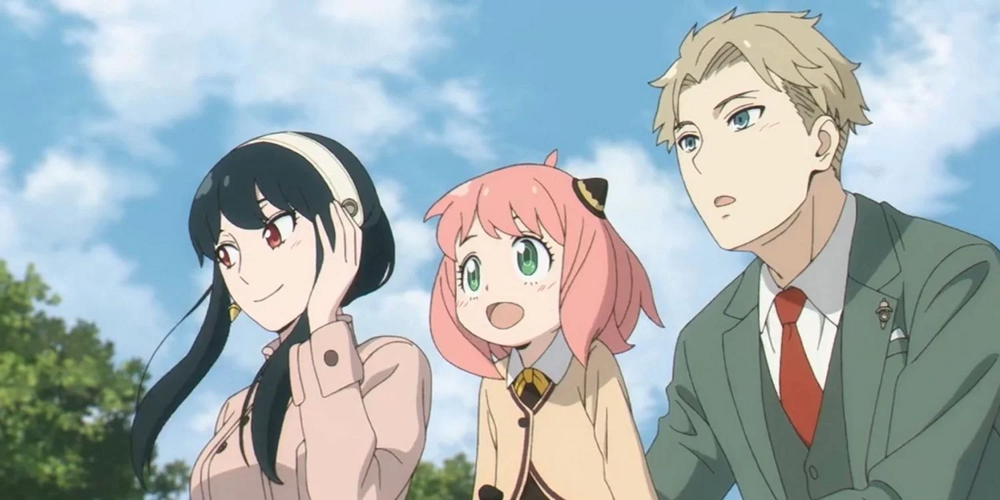
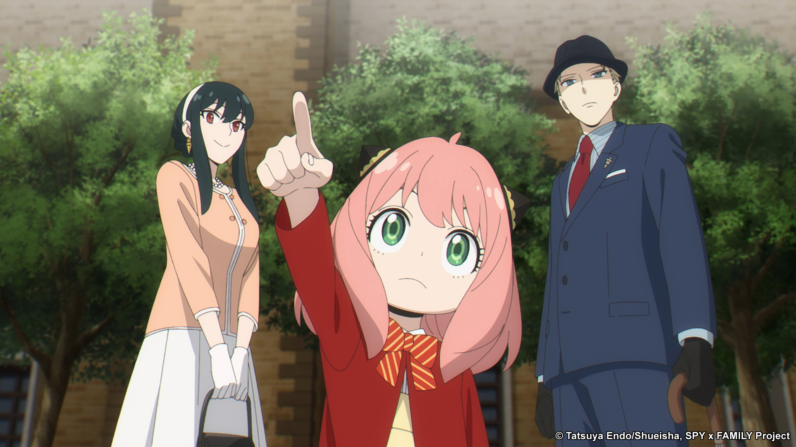
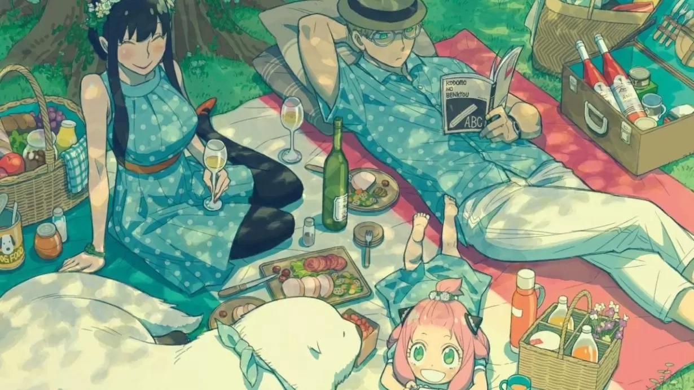

There's a great amount of reasons that makes this show so wholesome. I'll start off by explaining the premise; a top secret spy creates a fake family to maintain world peace (there's more to this of course). However he fails to realize that his daughter is telepathic and can read minds. While his wife is an incredibly talented assasin of the country he's infiltrated. Despite how serious things sound, it's a comedy that has so many domestic and wholesome moments that have you itching for more.
 Despite being his country's best spy, the father Loid, who takes pride in his brilliance, is played like a ragdoll by his telepathic adopted daughter. She finds her parents' missions to be of entertainment and sometimes even helps with them!
Above all, even the amazing storyline- I think I admire the at the most. It's so colorful and eye catching and makes me happy whenever I read the graphic novel for it. The author's drawing style itself is also different and pretty fun!
